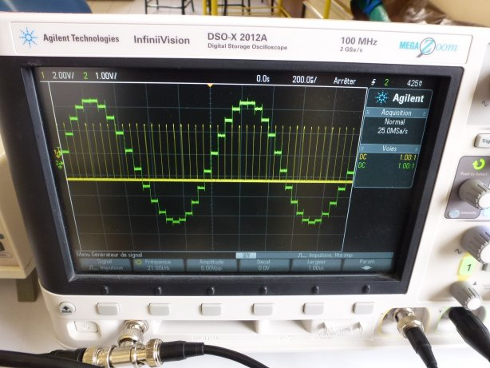
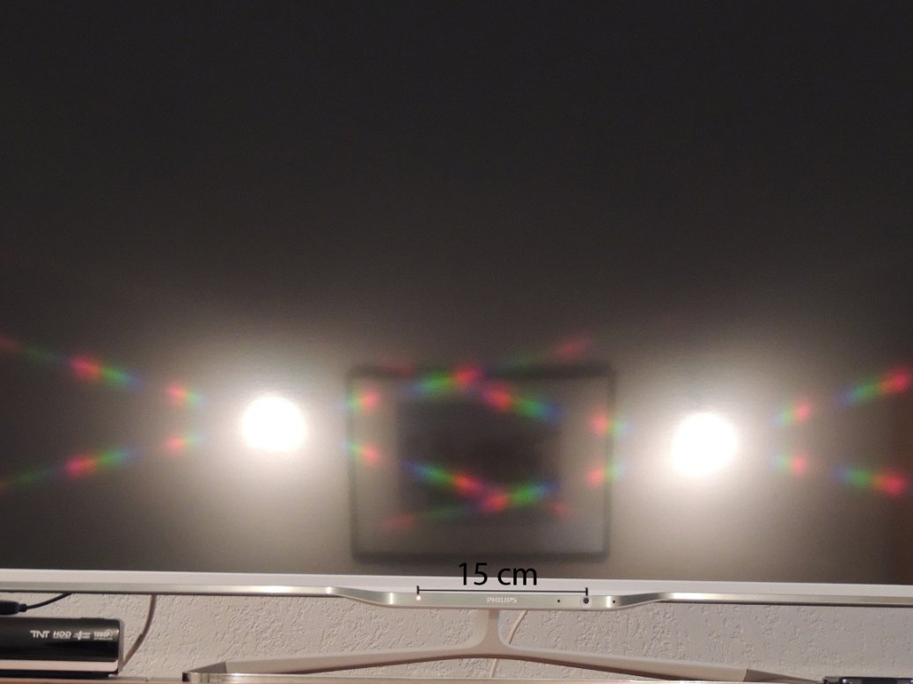
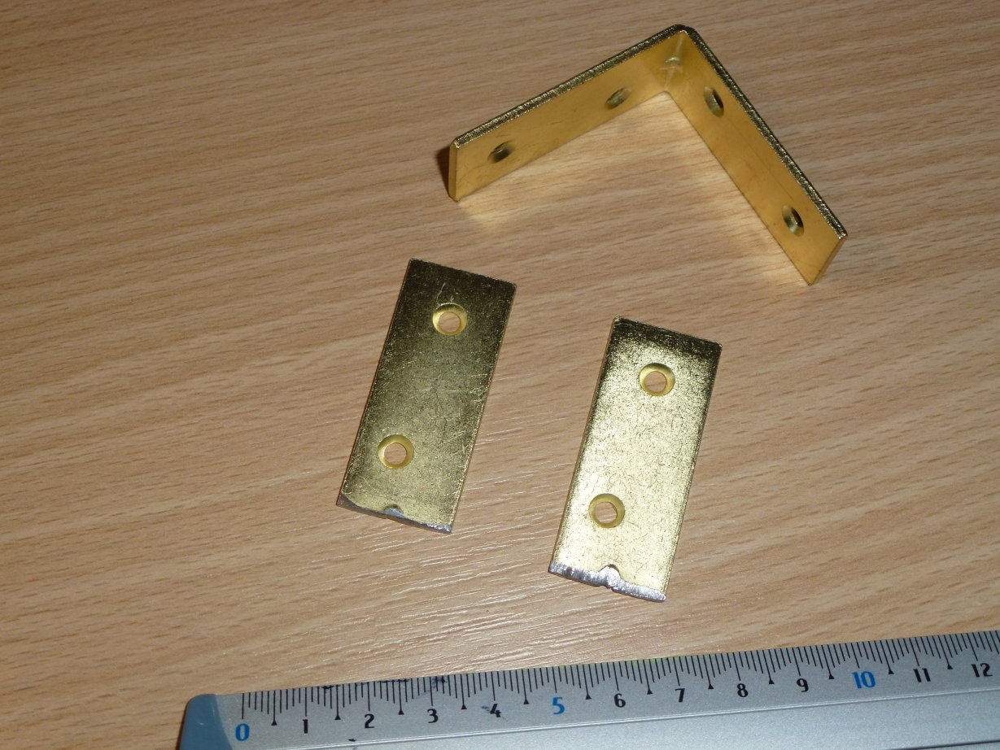
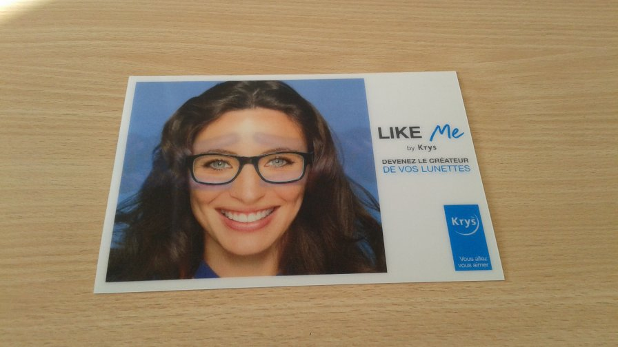

phpMyVisites | Open source web analytics
Sciences Physiques en MP*, Lycée Clemenceau Nantes |
| L'échantillonnage d'un
signal
analogique est la première étape du traitement d'un signal visant à le
numériser, c'est-à-dire à le transformer en une suite de 0 et de 1
facilement mise en mémoire. Une telle mise en forme permet ensuite de
faire aisément des traitements du signal grâce à l'ordinateur.
L'échantillonnage consiste à prélever la valeur du signal analogique
avec un rythme régulier fixé par la fréquence d'échantillonnage (signal
jaune ci-contre). La condition de Shannon exige pour qu'il soit
possible de restituer le signal analogique que la fréquence
d'échantillonnage soit supérieure au double de la plus grande fréquence
contenue dans le signal. Le signal vert représente un signal sinuoïdal
échantillonné et bloqué. La valeur du signal est fixée à celle du
moment d'échantillonnage jusqu'à la prochaine évaluation. La précision
de l'échantillonnage dépend du nombre de bits utilisés (8 bits ou 16
bits par exemple). Plus le nombre de bits est élevé plus l'écart entre
deux valeurs consécutives accessibles des paliers est faible. |
 |
|
|
|
|
|
Principe de la diffraction Mémoire de Fresnel 1818 |
Onde lumineuse et optique
géométrique |
Impulsions ultra-brèves |
Cours |
Transformationsde Galilée et de Lorentz |
|
|
|
Mécanique
quantique
|
Relativité classique et relativité restreinte |
Accumulateurs |
|
L'ionosphère |
Effet tunnel et microscope |
| La
photographie que vous pouvez voir ci-contre a été prise à environ 2
mètres d'une télévision dont l'écran fonctionne sur la technologie LED.
Deux spots d'éclairage était allumés sur un mur situé à l'opposé de
l'écran. Les caractéristiques commerciales de l'écran sont de 106cm sur
60cm et 1920 x 1080 pour les pixels. Analyser et modéliser. |
 |
| La
photographie que vous pouvez voir ci-contre montre une petite équerre
en laiton qu'on utilise lorsque l'on veut réaliser, par exemple, une
petite étagère. Avec une scie à métaux, cette équerre a été sciée en
deux parties au niveau de la pliure. Une fois sciée, il est quasiment
impossible de prendre chaque partie dans ses mains. Analyser et modéliser. |
 |
|  | Vous pouvez voir deux
photographies
d'une même carte qui présente deux images en fonction de l'orientation
qu'on lui donne lorsqu'on la regarde. Ceci est la conséquence de la
présence d'une structure en relief présente à la surface de la carte. En utilisant la vidéo téléchargeable ci-dessous, déterminer une caractéristique de la structuration spatiale de la carte. |
| Diaporamas | TD | Devoirs | TP | Oral | Etudiants MP* | Anciens | Accueil |